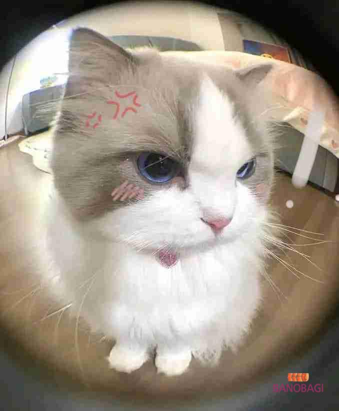

|
 |
🌸 Xin chào mọi người! 🌸 Mình là Hạ Vy, hiện đang là học sinh lớp 12A1. Sở thíchLà học sinh lớp 12 với lịch học bận rộn, mình luôn xem nấu ăn và nghe nhạc như hai “người bạn thân” giúp cân bằng cuộc sống. Mỗi khi được tự tay chuẩn bị một món ăn mới, mình lại cảm thấy như đang khám phá một thế giới sáng tạo đầy màu sắc. Còn âm nhạc thì luôn ở bên, giúp mình thư giãn sau những giờ học căng thẳng và tiếp thêm động lực để cố gắng. Tính cáchMình là người vui vẻ, hòa đồng và luôn cố gắng hết mình trong học tập cũng như trong mọi hoạt động của lớp. Mình rất thích được kết nối, học hỏi và trải nghiệm những điều mới mẻ. |